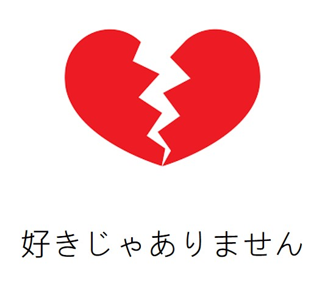

大家的日本語 初級Ｉ
第九課
90%
とても
： 只能接形容詞
よく
： 只能接動詞
80%
だいたい
： 表示程度
たくさん
： 表示數量
30%
すこし
表示程度,數量
形. 動詞都可以接
10%
あまり
形. 動詞都可以接
後面接否定
0%
ぜんぜん
形. 動詞都可以接
後面接否定
わたしはチョコレート
が
好きです。
わたしはビール
が
好きです。

わたしは納豆
が
好きじゃありません。
Page 4
Page 1
Page 2
Page 3
Page 4
Page:
Previous
Next